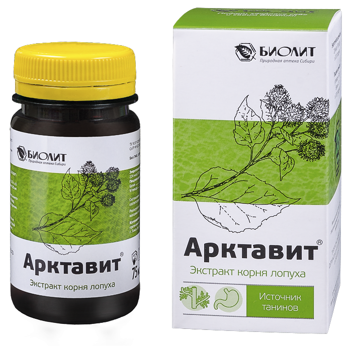

Арктавит (напиток чайный из корня лопуха)

1 800
В корзину
Состав: концентрированный экстракт корня лопуха, вода.
Форма выпуска: флакон 75 мл.
Применение: Связывает и выводит из организма токсины, стимулирует антитоксическую функцию печени и обмен веществ, проявляет противоязвенную активность, оказывает противовоспалительное действие, угнетает развитие опухолевых процессов.
Области применения
Для сердца
Для желудка и кишечника
Для печени
Для зрения
Для волос
Для мозга
Для бронхов и лёгких
Для нервной системы
Инструкция
Экстракт корня лопуха концентрированный - сиропообразная жидкость бурого цвета.СОСТАВ
Концентрированный экстракт корня лопуха, собранного в мае.
Арктавит содержит аспарагин, инулин, протеин, эфирное бардановое масло, дубильные вещества, горечи, кислоты - пальмитиновую и стеариновую, ситостерин, стигмастерин, фитостерин, смолы, микро- и макроэлементы.
ДЕЙСТВИЕ
Арктавит обладает способностью связывать и выводить из организма токсины (в том числе токсины канцерогенного уровня), стимулирует потовыделение; обладает мочегонным, желчегонным и умеренным слабительным эффектами; стимулирует антитоксическую функцию печени и увеличивает содержание гликогена; проявляет противоязвенную активность; оказывает жаропонижающее, противовоспалительное и бактерицидное действие; стимулирует обмен веществ, уменьшает содержание мочевой кислоты в крови больных подагрой, быстро купирует боль и воспаление при обострении подагры; нормализует уровень сахара в крови.
Арктавит увеличивает выработку в печени секс-стероид-связывающего белка, нормализующего метаболизм половых гормонов, снижает факторы пролиферации TNF-альфа и IGF-1 и повышает уровень интерлейкина-10 с антипролиферативным действием.
Аспарагин, входящий в состав экстракта, обладает способностью угнетать развитие опухолевых процессов, препятствует развитию онкологических заболеваний.
Применение арктавита в перерывах между курсами специфической противоопухолевой терапии (об-лучение, химиотерапия) способствует существенному снижению концентрации токсических веществ и радионуклидов в крови, восстановлению состояния больных для реализации запланированного лечения.
ПОКАЗАНИЯ
Рекомендуется для профилактики и усиления эффекта медикаментозной терапии:
- гормонозависимых пролиферативных заболеваний (мастопатия, эндометриоз, миома матки);
- доброкачественной гиперплазии (аденомы) простаты;
- в восстановительных программах у больных онкологическими заболеваниями;
- при проведении специфической противоопухолевой терапии (облучение, химиотерапия);
- при интоксикации различного происхождения;
- при отравлении алкоголем и его суррогатами, абстинентном синдроме;
- нарушений углеводного, жирового и водно-солевого обменов;
- заболеваний, сопровождающихся повышением температуры, в качестве жаропонижающего средства;
- воспалительных заболеваний желудочно-кишечного тракта;
- сахарного диабета, ожирения, ревматизма, подагры, атеросклероза;
- кожных воспалительных и аллергических заболеваний (фурункулез, аллергический дерматит, экзема);
- инфицированных ран, ожогов.
ПРИМЕНЕНИЕ:
- при интоксикациях различного происхождения —по 1/2 ч. л. 3 раза в день после еды, предварительно растворив в 1 стакане теплой воды. Принимать 3-4 недели;
- для снижения интенсивности похмельного синдрома — 1/2 ч. л. растворить в 1/2 стакана теплой воды, принимать за час до употребления алкоголя;
- при фурункулезе, экземах, аллергических дерматитах —по 1/2 ч. л. после еды, предварительно растворив в 1/2 стакана теплой воды. Принимать 3-4 раза в день.
- в качестве жаропонижающего средства — по 1/2 ч. л. растворить в 1 стакане теплой воды, добавить мед (2 - 3 ч. л.), принимать после еды 3 раза в день до нормализации температуры;
- при подагре, мочекаменной болезни —по 1 ч. л. 3 раза в день после еды, предварительно растворив в 1/2 стакана теплой воды. Принимать в течение 4 - 8 недель, 2 курса в год;
- при заболеваниях гепатобилиарной системы и желудочно-кишечного тракта (гепатиты, хронические панкреатиты, гастриты, язвенная болезнь желудка и двенадцатиперстной кишки) —по 1/2 ч. л. 3 раза в день после еды, предварительно растворив в 1/2 стакана теплой воды. Принимать в течение 3 - 4 недель;
- при мастопатии, эндометриозе, миоме матки и доброкачественной гиперплазии предстательной железы —по 1 ч. л. 3 раза в день после еды, предварительно растворив в 1/2 стакана теплой воды. Длительность приема от 2-х до 6-ти месяцев;
- при онкологических заболеваниях —по 1 ч. л. 3 раза в день после еды, предварительно растворив в 1/2 стакана теплой воды. Принимать в течение 4 недель, 3 курса в год;
- при проведении химиотерапии и облучения - по 1 ч. л. 3 раза в день после еды, предварительно растворив в 1/2 стакана теплой воды. Принимать в перерывах между курсами противоопухолевой терапии.
Перед применением проконсультируйтесь с врачом.
Не является лекарственным средством.
ФОРМА ВЫПУСКА
Флакон темного цвета 75 мл.
УСЛОВИЯ ХРАНЕНИЯ
Хранить при температуре не выше +25 оС и влажности не более 75% в защищенном от света, недоступном для детей месте. После вскрытия флакон хранить в холодильнике. В процессе хранения экстракта возможно выпадение кристаллов аспарагина. Перед применением содержимое флакона необходимо тщательно перемешивать.
Срок годности —2 года.
Выпускается по ТУ 9197-229-20680882-2016
Свидетельство о государственной регистрации:
№ КZ.16.01.97.003.Е.000767.07.16 от 19.07.2016 г.
ИСПОЛЬЗУЙТЕ АРКТАВИТ СОВМЕСТНО С ДРУГИМИ ПРОДУКТАМИ КОМПАНИИ «БИОЛИТ:
- при заболеваниях сердечно-сосудистой системы: алтариум, алтайские бальзамы «Ильгумень» (№1, №3, №40, листья крапивы в капсулах, экстракт пихты сибирской, сердечно-сосудистые сборы, скипидарные ванны;
- при заболеваниях желудочно-кишечного тракта: ахиллан, гепатосол, алтайский бальзам «Ильгумень» №2, кисель с цельными ягодами и соки «Облепиха», масло облепихи, концентрированные овощные соки, травяные сборы (желудочные, желчегонный, слабительный, сбор при язвенной болезни желудка и 12-перстной кишки);
- для печени: гепатобиол, гепатосол, сироп «Лохеин», тремулацин или инвадонт (при описторхозе), тахисол (при лямблиозе), алтариум; - при проблемах со зрением: кисель и соки «Облепиха», «Черника», листья крапивы в капсулах;
- при кожных заболеваниях: псоридонт, гель пихтовый, гель «Бадяга форте», деготь берестовый, гепатобиол;
- при мастопатии: мамагель;
- для иммунитета: сироп эхинацеи, экстракт пихты сибирской, алтариум, кисели с цельными ягодами, ягодные и овощные концентрированные соки, травяные чайные напитки и сборы, гель пихтовый и концентрат пихтовый; - для мужчин: бальзам алтайский «Ильгумень» №5, пантобиол-1 и пантобиол-2+, алтариум;
- для женщин: бальзам алтайский «Ильгумень» №6, пантобиол-1 и пантобиол-2+, мамагель, климактерический сбор, травяные чайные напитки «Корень красной щетки» и «Трава боровой матки», алтариум;
- для опорно-двигательного аппарата: пантобиол-1 и пантобиол-2+.